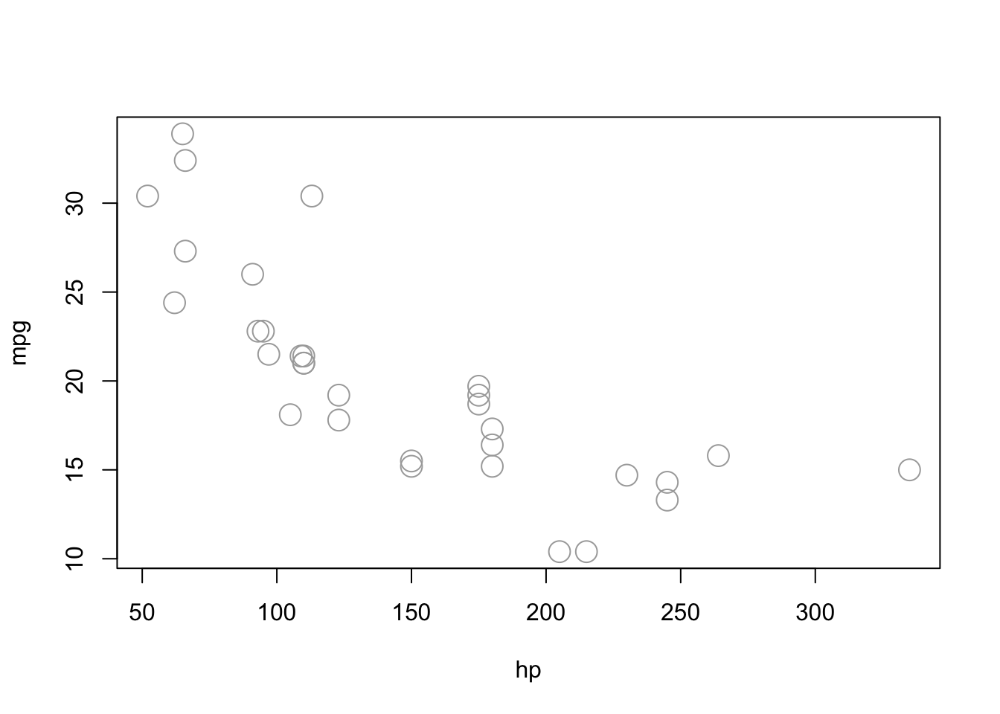
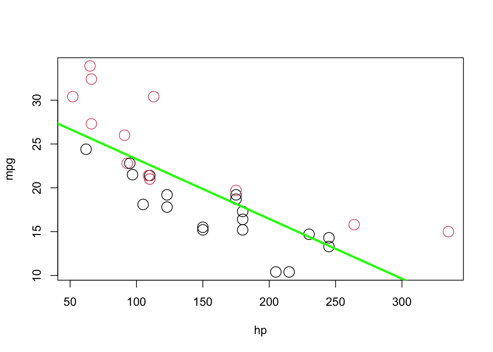
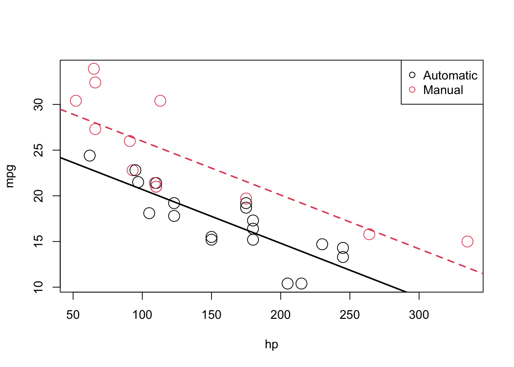
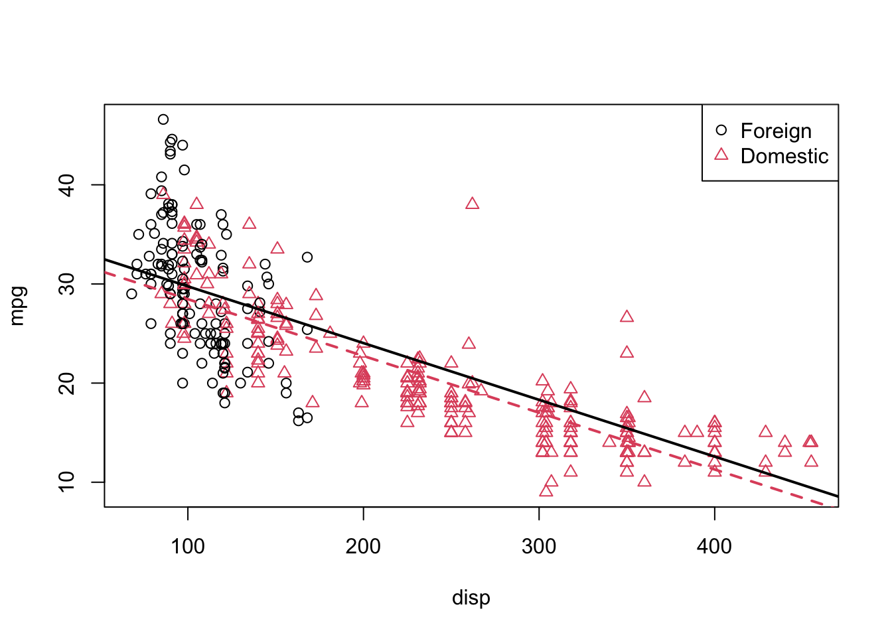
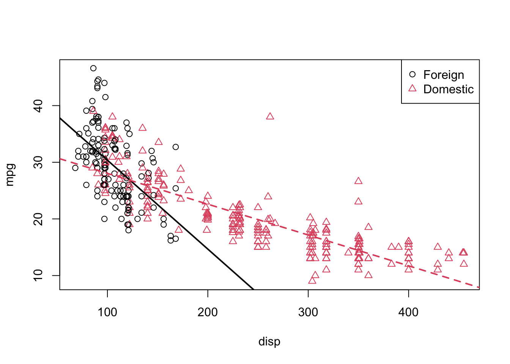

Chapter 36 R Lab 3 - Preparing the data
36.1 Preparing the data for a regression analysis with lm()
In chapter 2 we estimated a simple linear regression by writing a set of simple R commands to perform the necessary calculations. But we can use the lm() command, instead. We will use three datasets in this lab. Let’s start with the first one, vehicles.
library(fueleconomy) #install.packages("fueleconomy")
data(vehicles)
df <- as.data.frame(vehicles)
head(df)## id make model year class trans
## 1 13309 Acura 2.2CL/3.0CL 1997 Subcompact Cars Automatic 4-spd
## 2 13310 Acura 2.2CL/3.0CL 1997 Subcompact Cars Manual 5-spd
## 3 13311 Acura 2.2CL/3.0CL 1997 Subcompact Cars Automatic 4-spd
## 4 14038 Acura 2.3CL/3.0CL 1998 Subcompact Cars Automatic 4-spd
## 5 14039 Acura 2.3CL/3.0CL 1998 Subcompact Cars Manual 5-spd
## 6 14040 Acura 2.3CL/3.0CL 1998 Subcompact Cars Automatic 4-spd
## drive cyl displ fuel hwy cty
## 1 Front-Wheel Drive 4 2.2 Regular 26 20
## 2 Front-Wheel Drive 4 2.2 Regular 28 22
## 3 Front-Wheel Drive 6 3.0 Regular 26 18
## 4 Front-Wheel Drive 4 2.3 Regular 27 19
## 5 Front-Wheel Drive 4 2.3 Regular 29 21
## 6 Front-Wheel Drive 6 3.0 Regular 26 17str(df)## 'data.frame': 33442 obs. of 12 variables:
## $ id : num 13309 13310 13311 14038 14039 ...
## $ make : chr "Acura" "Acura" "Acura" "Acura" ...
## $ model: chr "2.2CL/3.0CL" "2.2CL/3.0CL" "2.2CL/3.0CL" "2.3CL/3.0CL" ...
## $ year : num 1997 1997 1997 1998 1998 ...
## $ class: chr "Subcompact Cars" "Subcompact Cars" "Subcompact Cars" "Subcompact Cars" ...
## $ trans: chr "Automatic 4-spd" "Manual 5-spd" "Automatic 4-spd" "Automatic 4-spd" ...
## $ drive: chr "Front-Wheel Drive" "Front-Wheel Drive" "Front-Wheel Drive" "Front-Wheel Drive" ...
## $ cyl : num 4 4 6 4 4 6 4 4 6 5 ...
## $ displ: num 2.2 2.2 3 2.3 2.3 3 2.3 2.3 3 2.5 ...
## $ fuel : chr "Regular" "Regular" "Regular" "Regular" ...
## $ hwy : num 26 28 26 27 29 26 27 29 26 23 ...
## $ cty : num 20 22 18 19 21 17 20 21 17 18 ...36.1.1 Factor variables
If we want to estimate a model, we need to check the structure of the model variables in the data. For example, you can see that some of the variables are “characters”, such as make. It is always a good practice to transform them into factor variables also known as indicator, categorical, or dummy variables. You can still use “character” variables in lm() or use them in descriptive analyses, but we will lose many features. There are many different ways to convert one type of vector to another type, here are two simple ways:
#First way:
df <- as.data.frame(vehicles)
for (i in 1:ncol(df)) {
if(is.character(df[,i])) df[,i] <- as.factor(df[,i])
}
#2nd way:
df <- as.data.frame(vehicles)
colms <- sapply(df, is.character)
df[colms] <- lapply(df[colms], as.factor)
str(df)## 'data.frame': 33442 obs. of 12 variables:
## $ id : num 13309 13310 13311 14038 14039 ...
## $ make : Factor w/ 128 levels "Acura","Alfa Romeo",..: 1 1 1 1 1 1 1 1 1 1 ...
## $ model: Factor w/ 3198 levels "1-Ton Truck 2WD",..: 28 28 28 29 29 29 29 29 29 30 ...
## $ year : num 1997 1997 1997 1998 1998 ...
## $ class: Factor w/ 34 levels "Compact Cars",..: 29 29 29 29 29 29 29 29 29 1 ...
## $ trans: Factor w/ 47 levels "Auto (AV-S6)",..: 33 44 33 33 44 33 33 44 33 33 ...
## $ drive: Factor w/ 7 levels "2-Wheel Drive",..: 5 5 5 5 5 5 5 5 5 5 ...
## $ cyl : num 4 4 6 4 4 6 4 4 6 5 ...
## $ displ: num 2.2 2.2 3 2.3 2.3 3 2.3 2.3 3 2.5 ...
## $ fuel : Factor w/ 13 levels "CNG","Diesel",..: 12 12 12 12 12 12 12 12 12 8 ...
## $ hwy : num 26 28 26 27 29 26 27 29 26 23 ...
## $ cty : num 20 22 18 19 21 17 20 21 17 18 ...#We won't learn the advance use of 'apply' family in this text.
#But this is a helpful line. apply() works only with matrices.
#sapply() and lapply() are for lists. But a data frame is also a list
#Therefore df[2] instead of df[, 2] can work very well.
#How about df[1:10, 2] vs df[[2]][1:10]. Same!You can also numeric or integer types for indicator variables. Again the good practice is to convert them to factor variables.
36.1.2 Dummy Coding
Let’s look at drive in our data. In dummy coding, you will always have a contrast matrix with one less column than levels of the original variable. In our example, our categorical variable has 7 levels so we will have contrast matrices with 6 columns and 7 rows.
tapply(df$hwy, df$drive, mean) # Mean hwy MPG for each drive type.## 2-Wheel Drive 4-Wheel Drive
## 20.22091 22.14592
## 4-Wheel or All-Wheel Drive All-Wheel Drive
## 19.62193 24.75927
## Front-Wheel Drive Part-time 4-Wheel Drive
## 28.32944 18.72917
## Rear-Wheel Drive
## 20.98899#This is also a nice function. Try this:
#This is similar to "egen" in Stata.
tapply(df$hwy, df$drive, function(x) c(mean(x), sd(x)))## $`2-Wheel Drive`
## [1] 20.220907 7.524566
##
## $`4-Wheel Drive`
## [1] 22.145923 3.742637
##
## $`4-Wheel or All-Wheel Drive`
## [1] 19.62193 3.68364
##
## $`All-Wheel Drive`
## [1] 24.759274 4.046489
##
## $`Front-Wheel Drive`
## [1] 28.329437 5.536714
##
## $`Part-time 4-Wheel Drive`
## [1] 18.729167 2.069728
##
## $`Rear-Wheel Drive`
## [1] 20.988994 4.949314Dummy coding is a very commonly used coding scheme. It compares each level of the categorical variable to a fixed reference level. For example, we can choose drive = 1 as the reference group and compare the mean of each level of drive to the reference level of 1. This is the default for disordered factors in R.
#assigning the treatment contrasts to drive
contrasts(df$drive)## 4-Wheel Drive 4-Wheel or All-Wheel Drive
## 2-Wheel Drive 0 0
## 4-Wheel Drive 1 0
## 4-Wheel or All-Wheel Drive 0 1
## All-Wheel Drive 0 0
## Front-Wheel Drive 0 0
## Part-time 4-Wheel Drive 0 0
## Rear-Wheel Drive 0 0
## All-Wheel Drive Front-Wheel Drive
## 2-Wheel Drive 0 0
## 4-Wheel Drive 0 0
## 4-Wheel or All-Wheel Drive 0 0
## All-Wheel Drive 1 0
## Front-Wheel Drive 0 1
## Part-time 4-Wheel Drive 0 0
## Rear-Wheel Drive 0 0
## Part-time 4-Wheel Drive Rear-Wheel Drive
## 2-Wheel Drive 0 0
## 4-Wheel Drive 0 0
## 4-Wheel or All-Wheel Drive 0 0
## All-Wheel Drive 0 0
## Front-Wheel Drive 0 0
## Part-time 4-Wheel Drive 1 0
## Rear-Wheel Drive 0 1contrasts(df$drive) <- contr.treatment(7, base=4) #Changing the base
contrasts(df$drive)## 1 2 3 5 6 7
## 2-Wheel Drive 1 0 0 0 0 0
## 4-Wheel Drive 0 1 0 0 0 0
## 4-Wheel or All-Wheel Drive 0 0 1 0 0 0
## All-Wheel Drive 0 0 0 0 0 0
## Front-Wheel Drive 0 0 0 1 0 0
## Part-time 4-Wheel Drive 0 0 0 0 1 0
## Rear-Wheel Drive 0 0 0 0 0 1We can make good tables as well:
summary(df$drive)## 2-Wheel Drive 4-Wheel Drive
## 507 699
## 4-Wheel or All-Wheel Drive All-Wheel Drive
## 6647 1267
## Front-Wheel Drive Part-time 4-Wheel Drive
## 12233 96
## Rear-Wheel Drive
## 11993table(df$fuel, df$drive)##
## 2-Wheel Drive 4-Wheel Drive
## CNG 0 0
## Diesel 72 21
## Electricity 14 0
## Gasoline or E85 0 93
## Gasoline or natural gas 0 0
## Gasoline or propane 0 0
## Midgrade 0 12
## Premium 1 223
## Premium and Electricity 0 0
## Premium Gas or Electricity 0 0
## Premium or E85 0 18
## Regular 420 332
## Regular Gas and Electricity 0 0
##
## 4-Wheel or All-Wheel Drive All-Wheel Drive
## CNG 2 0
## Diesel 225 30
## Electricity 0 0
## Gasoline or E85 147 97
## Gasoline or natural gas 4 0
## Gasoline or propane 4 0
## Midgrade 0 6
## Premium 1480 679
## Premium and Electricity 0 0
## Premium Gas or Electricity 0 1
## Premium or E85 1 32
## Regular 4784 422
## Regular Gas and Electricity 0 0
##
## Front-Wheel Drive Part-time 4-Wheel Drive
## CNG 23 0
## Diesel 200 0
## Electricity 25 0
## Gasoline or E85 238 28
## Gasoline or natural gas 5 0
## Gasoline or propane 0 0
## Midgrade 0 0
## Premium 2088 8
## Premium and Electricity 0 0
## Premium Gas or Electricity 5 0
## Premium or E85 0 0
## Regular 9641 60
## Regular Gas and Electricity 8 0
##
## Rear-Wheel Drive
## CNG 33
## Diesel 326
## Electricity 16
## Gasoline or E85 440
## Gasoline or natural gas 9
## Gasoline or propane 4
## Midgrade 25
## Premium 4138
## Premium and Electricity 1
## Premium Gas or Electricity 1
## Premium or E85 37
## Regular 6963
## Regular Gas and Electricity 036.1.3 Column (Variable) names
Before any type of data analysis, we need to take care of several things. One of these is that we usually do not use the whole data, but a subset of the data. For example, you may want to remove some observations or keep only some types. And most importantly we need to take care of missing values. We will look at these now.
First, look at the column (variable) names. Do they have generic names (that is, \(x_1\), $x_2$, etc)? Or do the names have typo problems, or are too long/short? In our vehicles data the names seem fine. Let’s use another data, Autompg.
library(tidyverse)
autompg <- read_csv("auto-mpg.csv", show_col_types = FALSE)
#autompg = read.table("http://archive.ics.uci.edu/ml/machine-learning-databases/auto-mpg/auto-mpg.data",
#quote = "\"", comment.char = "", stringsAsFactors = FALSE)
colnames(autompg)## [1] "mpg" "cyl" "displ" "hp" "weight" "accel" "yr" "origin"
## [9] "name"str(autompg)## spc_tbl_ [392 × 9] (S3: spec_tbl_df/tbl_df/tbl/data.frame)
## $ mpg : num [1:392] 18 15 18 16 17 15 14 14 14 15 ...
## $ cyl : num [1:392] 8 8 8 8 8 8 8 8 8 8 ...
## $ displ : num [1:392] 307 350 318 304 302 429 454 440 455 390 ...
## $ hp : num [1:392] 130 165 150 150 140 198 220 215 225 190 ...
## $ weight: num [1:392] 3504 3693 3436 3433 3449 ...
## $ accel : num [1:392] 12 11.5 11 12 10.5 10 9 8.5 10 8.5 ...
## $ yr : num [1:392] 70 70 70 70 70 70 70 70 70 70 ...
## $ origin: num [1:392] 1 1 1 1 1 1 1 1 1 1 ...
## $ name : chr [1:392] "chevrolet chevelle malibu" "buick skylark 320" "plymouth satellite" "amc rebel sst" ...
## - attr(*, "spec")=
## .. cols(
## .. mpg = col_double(),
## .. cyl = col_double(),
## .. displ = col_double(),
## .. hp = col_double(),
## .. weight = col_double(),
## .. accel = col_double(),
## .. yr = col_double(),
## .. origin = col_double(),
## .. name = col_character()
## .. )
## - attr(*, "problems")=<externalptr>#I don't like them! How about this:
colnames(autompg) = c("mpg", "cyl", "disp", "hp", "wt", "acc", "year", "origin", "name")
colnames(autompg)## [1] "mpg" "cyl" "disp" "hp" "wt" "acc" "year" "origin"
## [9] "name"str(autompg)## spc_tbl_ [392 × 9] (S3: spec_tbl_df/tbl_df/tbl/data.frame)
## $ mpg : num [1:392] 18 15 18 16 17 15 14 14 14 15 ...
## $ cyl : num [1:392] 8 8 8 8 8 8 8 8 8 8 ...
## $ disp : num [1:392] 307 350 318 304 302 429 454 440 455 390 ...
## $ hp : num [1:392] 130 165 150 150 140 198 220 215 225 190 ...
## $ wt : num [1:392] 3504 3693 3436 3433 3449 ...
## $ acc : num [1:392] 12 11.5 11 12 10.5 10 9 8.5 10 8.5 ...
## $ year : num [1:392] 70 70 70 70 70 70 70 70 70 70 ...
## $ origin: num [1:392] 1 1 1 1 1 1 1 1 1 1 ...
## $ name : chr [1:392] "chevrolet chevelle malibu" "buick skylark 320" "plymouth satellite" "amc rebel sst" ...
## - attr(*, "spec")=
## .. cols(
## .. mpg = col_double(),
## .. cyl = col_double(),
## .. displ = col_double(),
## .. hp = col_double(),
## .. weight = col_double(),
## .. accel = col_double(),
## .. yr = col_double(),
## .. origin = col_double(),
## .. name = col_character()
## .. )
## - attr(*, "problems")=<externalptr>36.1.4 Data subsetting and missing values
OK, they are fine now. Let’s see if they have any missing value. Missing values are defined by NA in R. We’ll see later NaN as well.
any(is.na(autompg))## [1] FALSE#But we have to be careful. HP is a character vector. Why? Perhaps it contains a character?
which(autompg$hp == "?")## integer(0)#Pay attention to subset(). This will be a time-saver
subset_hp <- subset(autompg, autompg$hp != "?")
dim(subset_hp)## [1] 392 9dim(autompg)## [1] 392 9#Those 6 observations are dropped and the new data frame is "subset_hp"
#You can drop columns (variables) as well
autompg_less = subset(autompg, select = c("mpg", "cyl", "disp", "hp", "wt", "acc", "year"))
dim(autompg_less)## [1] 392 7#Traditional way to do those subselections
subset_hp <- autompg[autompg$hp != "?",]
dim(subset_hp)## [1] 392 9dim(autompg)## [1] 392 9#And
autompg_less = autompg[, c(1:7)]
dim(autompg_less)## [1] 392 7Look at the help(subset): “This is a convenience function intended for use interactively. For programming it is better to use the standard subsetting functions like [], and in particular the non-standard evaluation of argument subset can have unanticipated consequences”.
36.2 “DUMMY” variable models
We can use our dataset, df, which is a cleaned version of vehicles, to try out a “dummy” variable model.
#Remember we had this:
tapply(df$hwy, df$drive, mean)## 2-Wheel Drive 4-Wheel Drive
## 20.22091 22.14592
## 4-Wheel or All-Wheel Drive All-Wheel Drive
## 19.62193 24.75927
## Front-Wheel Drive Part-time 4-Wheel Drive
## 28.32944 18.72917
## Rear-Wheel Drive
## 20.98899contrasts(df$drive) <- contr.treatment(7, base=1) #Setting the base back to 1Lets try to make a regression on highway fuel economy based upon our drive dummy variable.
model_nocons <- lm(hwy ~ drive + 0, data = df) # "0" means no constant in lm()
summary(model_nocons)##
## Call:
## lm(formula = hwy ~ drive + 0, data = df)
##
## Residuals:
## Min 1Q Median 3Q Max
## -12.329 -3.146 -0.329 2.671 80.671
##
## Coefficients:
## Estimate Std. Error t value Pr(>|t|)
## drive2-Wheel Drive 20.22091 0.21973 92.03 <2e-16 ***
## drive4-Wheel Drive 22.14592 0.18714 118.34 <2e-16 ***
## drive4-Wheel or All-Wheel Drive 19.62193 0.06069 323.34 <2e-16 ***
## driveAll-Wheel Drive 24.75927 0.13900 178.12 <2e-16 ***
## driveFront-Wheel Drive 28.32944 0.04473 633.29 <2e-16 ***
## drivePart-time 4-Wheel Drive 18.72917 0.50497 37.09 <2e-16 ***
## driveRear-Wheel Drive 20.98899 0.04518 464.57 <2e-16 ***
## ---
## Signif. codes: 0 '***' 0.001 '**' 0.01 '*' 0.05 '.' 0.1 ' ' 1
##
## Residual standard error: 4.948 on 33435 degrees of freedom
## Multiple R-squared: 0.9587, Adjusted R-squared: 0.9587
## F-statistic: 1.11e+05 on 7 and 33435 DF, p-value: < 2.2e-16We can add in an intercept now:
model_withcons <- lm(hwy ~ drive, data = df)
summary(model_withcons)##
## Call:
## lm(formula = hwy ~ drive, data = df)
##
## Residuals:
## Min 1Q Median 3Q Max
## -12.329 -3.146 -0.329 2.671 80.671
##
## Coefficients:
## Estimate Std. Error t value Pr(>|t|)
## (Intercept) 20.2209 0.2197 92.025 < 2e-16 ***
## drive2 1.9250 0.2886 6.670 2.6e-11 ***
## drive3 -0.5990 0.2280 -2.628 0.008605 **
## drive4 4.5384 0.2600 17.455 < 2e-16 ***
## drive5 8.1085 0.2242 36.160 < 2e-16 ***
## drive6 -1.4917 0.5507 -2.709 0.006757 **
## drive7 0.7681 0.2243 3.424 0.000618 ***
## ---
## Signif. codes: 0 '***' 0.001 '**' 0.01 '*' 0.05 '.' 0.1 ' ' 1
##
## Residual standard error: 4.948 on 33435 degrees of freedom
## Multiple R-squared: 0.3656, Adjusted R-squared: 0.3655
## F-statistic: 3212 on 6 and 33435 DF, p-value: < 2.2e-16You can see that the intercept is the first category, 2WDrive. The rest of the coefficient are the difference of each drive type from 2wdrive. Let’s change the base to 4:
contrasts(df$drive) <- contr.treatment(7, base=4) #Changing the base
model_withcons <- lm(hwy ~ drive, data = df)
summary(model_withcons)##
## Call:
## lm(formula = hwy ~ drive, data = df)
##
## Residuals:
## Min 1Q Median 3Q Max
## -12.329 -3.146 -0.329 2.671 80.671
##
## Coefficients:
## Estimate Std. Error t value Pr(>|t|)
## (Intercept) 24.7593 0.1390 178.12 <2e-16 ***
## drive1 -4.5384 0.2600 -17.45 <2e-16 ***
## drive2 -2.6134 0.2331 -11.21 <2e-16 ***
## drive3 -5.1373 0.1517 -33.87 <2e-16 ***
## drive5 3.5702 0.1460 24.45 <2e-16 ***
## drive6 -6.0301 0.5238 -11.51 <2e-16 ***
## drive7 -3.7703 0.1462 -25.80 <2e-16 ***
## ---
## Signif. codes: 0 '***' 0.001 '**' 0.01 '*' 0.05 '.' 0.1 ' ' 1
##
## Residual standard error: 4.948 on 33435 degrees of freedom
## Multiple R-squared: 0.3656, Adjusted R-squared: 0.3655
## F-statistic: 3212 on 6 and 33435 DF, p-value: < 2.2e-1636.2.1 mtcars example
Now it’s time to estimate a model that defines mpg (fuel efficiency, in miles per gallon), as a function of hp (horsepower - in foot-pounds per second), and am (transmission, Automatic or Manual).
#First, let's plot it (play with parameter in plot() to see the difference)
plot(mpg ~ hp, data = mtcars, cex = 2, col="darkgrey")
let’s start with a simple linear regression where \(Y\) is mpg and \(x_{1}\) is hp. This is our first and simplest lm() application. For the sake of simplicity, let’s drop the index \(i\) for observations.
\[ Y=\beta_{0}+\beta_{1} x_{1}+\epsilon \]
model1 <- lm(mpg ~ hp, data = mtcars)
model1##
## Call:
## lm(formula = mpg ~ hp, data = mtcars)
##
## Coefficients:
## (Intercept) hp
## 30.09886 -0.06823plot(mpg ~ hp, data = mtcars, col = am + 1, cex = 2)
abline(model1, lwd = 3, col = "green")
As you see the red, manual, observations are mostly above the line, while the black, automatic, observations are mostly below the line. This means not only our model underestimates (overestimates) the fuel efficiency of manual (automatic) transmissions, but also the effect of hp on mpg will be biased. This is because OLS tries to minimize the MSE for all observation not for manual and automatic transmissions separately. To correct for this, we add a predictor to our model, namely, am as \(x_{2}\), as follows:
\[ Y=\beta_{0}+\beta_{1} x_{1}+\beta_{2} x_{2}+\epsilon \] where \(x_{1}\) and \(Y\) remain the same, but now:
\[ x_{2}=\left\{\begin{array}{ll}{1} & {\text { manual transmission }} \\ {0} & {\text { automatic transmission }}\end{array}\right. \]
We call \(x_{2}\) as a “dummy” variable, which is a numerical variable that is used in a regression analysis to “code” for a binary categorical variable. Note that am is already a dummy variable, since it uses the values 0 and 1 to represent automatic and manual transmissions. As we have seen earlier, often, a variable like am would be stored as a character vector. Converting them to factor variables will take care of creating dummy variables.
model2 <- lm(mpg ~ hp + am, data = mtcars)
model2##
## Call:
## lm(formula = mpg ~ hp + am, data = mtcars)
##
## Coefficients:
## (Intercept) hp am
## 26.58491 -0.05889 5.27709Note the difference in \(\hat{\beta}_{1}\). Since \(x_{2}\) can only take values 0 and 1, we can write two different models, one for manual and one for automatic transmissions. For automatic transmissions, that is \(x_{2}\) = 0, we have,
\[ Y=\beta_{0}+\beta_{1} x_{1}+\epsilon \]
Then for manual transmissions, that is \(x_2 = 1\), we have,
\[ Y=\left(\beta_{0}+\beta_{2}\right)+\beta_{1} x_{1}+\epsilon \] Here is our interpretations:
- \(\hat{\beta}_{0} = 26.5849137\) is the estimated average mpg for a car with an automatic transmission and 0 hp.
- \(\hat{\beta}_{0} + \hat{\beta}_{2} = 31.8619991\) is the estimated average mpg for a car with a manual transmission and 0 hp.
- \(\hat{\beta}_{2} = 5.2770853\) is the estimated difference in average mpg for cars with manual transmissions as compared to those with automatic transmission, for any hp.
- \(\hat{\beta}_{1} = −0.0588878\) is the estimated change in average mpg for an increase in one hp, for either transmission types.
To show them on a plot, we can combine the coefficients from Model2 to calculate the estimated slope and intercepts, as we already described above
int_auto = coef(model2)[1]
int_manu = coef(model2)[1] + coef(model2)[3]
slope = coef(model2)[2]
#And re-plot them
plot(mpg ~ hp, data = mtcars, col = am + 1, cex = 2)
abline(int_auto, slope, col = 1, lty = 1, lwd = 2) # add line for auto
abline(int_manu, slope, col = 2, lty = 2, lwd = 2) # add line for manual
legend("topright", c("Automatic", "Manual"), col = c(1, 2), pch = c(1, 1))
The above picture makes it clear that \(\beta_{2}\) is significant, which you can verify mathematically with a hypothesis test.
In the model,
\[ Y=\beta_{0}+\beta_{1} x_{1}+\beta_{2} x_{2}+\epsilon \]
We see that the effect of hp (\(x_{1}\)) is the same irrespective of whether the car is manual or automatic. This is captured by \(\beta_{1}\) which is the average change in \(Y\) for an increase in \(x_{1}\), no matter the value of \(x_{2}\). Although \(\beta_{2}\) captures the difference in the average of Y for manual cars (remember \(x_{2} = 1\) for manuals), we do not know if the effect of hp would be different for manual cars. This is a restriction that we may not want to have and might venture a more flexible model.
To remove the “same slope” restriction, we will now discuss interaction. Essentially, we would like a model that allows for two different slopes one for each transmission type. Consider the following model,
\[ Y=\beta_{0}+\beta_{1} x_{1}+\beta_{2} x_{2}+\beta_{3} x_{1} x_{2}+\epsilon \]
where \(x_{1}\), \(x_{2}\), and \(Y\) are the same as before, but we have added a new interaction term \(x_{1}x_{2}\) which is the product of \(x_{1}\) and \(x_{2}\). So its effect on mpg is captured by the additional parameter \(\beta_{3}\). This model estimates differences in two slopes and two intercepts. Let’s see this mathematically:
For manual cars, that is \(x_{2}\) = 0, we have:
\[ Y=\beta_{0}+\beta_{1} x_{1}+\epsilon \]
For automatic cars, that is \(x_{2}\) = 1, we have
\[ Y=\left(\beta_{0}+\beta_{2}\right)+\left(\beta_{1}+\beta_{3}\right) x_{1}+\epsilon \]
These two models have both different slopes and intercepts.
- \(\beta_{0}\) is the average mpg for a manual car with 0 hp.
- \(\beta_{1}\) is the change in average mpg for an increase of one hp, for manual cars.
- \(\beta_{0} + \beta_{2}\) is the average mpg for a automatic car with 0 hp.
- \(\beta_{1} + \beta_{3}\) is the change in average mpg for an increase of one hp, for manual cars.
How do we fit this model in R? There are a number of ways.
36.2.2 model.matrix()
# These 2 are the same models
model1 = lm(mpg ~ hp + am + hp:am, data = mtcars)
model2 = lm(mpg ~ hp + am + hp*am, data = mtcars)
#Important note: even our am is a "numerical" variable, 0 and 1 are
#indicators, not numbers. So converting them to a factor variable is the
#proper way to handle categorical variables. The reason is simple. When you have a
#large dataset with many X variables, some of the indicator variables
#are going to be "numeric" not "character". For example, you amy have a
#variable with 10 categories identified with numbers from 1 to 10.
#R will take it as a continuous variable. If you convert it to factor variable
#everything will be easy. LET"S SEE:
mtcars$am <- as.factor(mtcars$am)
str(mtcars)## 'data.frame': 32 obs. of 11 variables:
## $ mpg : num 21 21 22.8 21.4 18.7 18.1 14.3 24.4 22.8 19.2 ...
## $ cyl : num 6 6 4 6 8 6 8 4 4 6 ...
## $ disp: num 160 160 108 258 360 ...
## $ hp : num 110 110 93 110 175 105 245 62 95 123 ...
## $ drat: num 3.9 3.9 3.85 3.08 3.15 2.76 3.21 3.69 3.92 3.92 ...
## $ wt : num 2.62 2.88 2.32 3.21 3.44 ...
## $ qsec: num 16.5 17 18.6 19.4 17 ...
## $ vs : num 0 0 1 1 0 1 0 1 1 1 ...
## $ am : Factor w/ 2 levels "0","1": 2 2 2 1 1 1 1 1 1 1 ...
## $ gear: num 4 4 4 3 3 3 3 4 4 4 ...
## $ carb: num 4 4 1 1 2 1 4 2 2 4 ...#Now we can use a better way to build a model, specially for larger datasets:
X <- model.matrix(~ hp + am + hp:am, data = mtcars)
head(X)## (Intercept) hp am1 hp:am1
## Mazda RX4 1 110 1 110
## Mazda RX4 Wag 1 110 1 110
## Datsun 710 1 93 1 93
## Hornet 4 Drive 1 110 0 0
## Hornet Sportabout 1 175 0 0
## Valiant 1 105 0 0#Or, even better
X <- model.matrix(~ hp*am, data = mtcars)
head(X)## (Intercept) hp am1 hp:am1
## Mazda RX4 1 110 1 110
## Mazda RX4 Wag 1 110 1 110
## Datsun 710 1 93 1 93
## Hornet 4 Drive 1 110 0 0
## Hornet Sportabout 1 175 0 0
## Valiant 1 105 0 0#Here the "base" for am is 0. We can make it without the intercept
#REMEMBER the "DUMMY TRAP"
X <- model.matrix(~ hp*am + 0, data = mtcars)
head(X)## hp am0 am1 hp:am1
## Mazda RX4 110 0 1 110
## Mazda RX4 Wag 110 0 1 110
## Datsun 710 93 0 1 93
## Hornet 4 Drive 110 1 0 0
## Hornet Sportabout 175 1 0 0
## Valiant 105 1 0 0#How about changing the base for am to 1 (0, manual is the base in ma, remember)?
#The level which is chosen for the reference level is the level which is contrasted against.
#By default, this is simply the first level alphabetically.
#We can specify that we want to be the reference level by using the relevel function:
table(mtcars$am)##
## 0 1
## 19 13levels(mtcars$am)## [1] "0" "1"str(mtcars$am)## Factor w/ 2 levels "0","1": 2 2 2 1 1 1 1 1 1 1 ...levels(mtcars$am) <- c("Manual", "Auto")
table(mtcars$am)##
## Manual Auto
## 19 13levels(mtcars$am)## [1] "Manual" "Auto"mtcars$am <- relevel(mtcars$am, "Auto")
str(mtcars$am)## Factor w/ 2 levels "Auto","Manual": 1 1 1 2 2 2 2 2 2 2 ...X <- model.matrix(~ hp*am, data = mtcars)
head(X)## (Intercept) hp amManual hp:amManual
## Mazda RX4 1 110 0 0
## Mazda RX4 Wag 1 110 0 0
## Datsun 710 1 93 0 0
## Hornet 4 Drive 1 110 1 110
## Hornet Sportabout 1 175 1 175
## Valiant 1 105 1 105#More on this https://hopstat.wordpress.com/2014/06/26/be-careful-with-using-model-design-in-r/
#and https://genomicsclass.github.io/book/pages/expressing_design_formula.html
#Final Note: if use model.matrix() for lm() you have to be careful about the X1, which is 1
Y <- mtcars$mpg
model3 <- lm(Y ~ X)
summary(model3) #Pay attention to F, R-squared etc)##
## Call:
## lm(formula = Y ~ X)
##
## Residuals:
## Min 1Q Median 3Q Max
## -4.3818 -2.2696 0.1344 1.7058 5.8752
##
## Coefficients: (1 not defined because of singularities)
## Estimate Std. Error t value Pr(>|t|)
## (Intercept) 31.8425012 1.5288820 20.827 < 2e-16 ***
## X(Intercept) NA NA NA NA
## Xhp -0.0587341 0.0101671 -5.777 3.34e-06 ***
## XamManual -5.2176534 2.6650931 -1.958 0.0603 .
## Xhp:amManual -0.0004029 0.0164602 -0.024 0.9806
## ---
## Signif. codes: 0 '***' 0.001 '**' 0.01 '*' 0.05 '.' 0.1 ' ' 1
##
## Residual standard error: 2.961 on 28 degrees of freedom
## Multiple R-squared: 0.782, Adjusted R-squared: 0.7587
## F-statistic: 33.49 on 3 and 28 DF, p-value: 2.112e-09#Becasue X has also have 1, lm() drops one of them
model4 <- lm(Y ~ X - 1)
summary(model4) #Pay attention to F, R-squared etc)##
## Call:
## lm(formula = Y ~ X - 1)
##
## Residuals:
## Min 1Q Median 3Q Max
## -4.3818 -2.2696 0.1344 1.7058 5.8752
##
## Coefficients:
## Estimate Std. Error t value Pr(>|t|)
## X(Intercept) 31.8425012 1.5288820 20.827 < 2e-16 ***
## Xhp -0.0587341 0.0101671 -5.777 3.34e-06 ***
## XamManual -5.2176534 2.6650931 -1.958 0.0603 .
## Xhp:amManual -0.0004029 0.0164602 -0.024 0.9806
## ---
## Signif. codes: 0 '***' 0.001 '**' 0.01 '*' 0.05 '.' 0.1 ' ' 1
##
## Residual standard error: 2.961 on 28 degrees of freedom
## Multiple R-squared: 0.9825, Adjusted R-squared: 0.98
## F-statistic: 393.5 on 4 and 28 DF, p-value: < 2.2e-16# So model4 is the correct one. 1 should be removed from lm()
# If you remove 1 from the "design" matrix
X <- model.matrix(~ hp*am - 1, data = mtcars) #Remove 1 from the "design" matrix
model5 <- lm(Y ~ X)
summary(model5)##
## Call:
## lm(formula = Y ~ X)
##
## Residuals:
## Min 1Q Median 3Q Max
## -4.3818 -2.2696 0.1344 1.7058 5.8752
##
## Coefficients: (1 not defined because of singularities)
## Estimate Std. Error t value Pr(>|t|)
## (Intercept) 26.6248479 2.1829432 12.197 1.01e-12 ***
## Xhp -0.0587341 0.0101671 -5.777 3.34e-06 ***
## XamAuto 5.2176534 2.6650931 1.958 0.0603 .
## XamManual NA NA NA NA
## Xhp:amManual -0.0004029 0.0164602 -0.024 0.9806
## ---
## Signif. codes: 0 '***' 0.001 '**' 0.01 '*' 0.05 '.' 0.1 ' ' 1
##
## Residual standard error: 2.961 on 28 degrees of freedom
## Multiple R-squared: 0.782, Adjusted R-squared: 0.7587
## F-statistic: 33.49 on 3 and 28 DF, p-value: 2.112e-09#It doesn't work!In concluding this section, we can see the effect of hp on mpg is almost identical for both manual and auto.
#First let's use a new model with the original levels in am
str(mtcars$am)## Factor w/ 2 levels "Auto","Manual": 1 1 1 2 2 2 2 2 2 2 ...mtcars$am <- relevel(mtcars$am, "Manual")
str(mtcars$am)## Factor w/ 2 levels "Manual","Auto": 2 2 2 1 1 1 1 1 1 1 ...Y <- mtcars$mpg
X <- model.matrix(~ hp*am, data = mtcars)
head(X)## (Intercept) hp amAuto hp:amAuto
## Mazda RX4 1 110 1 110
## Mazda RX4 Wag 1 110 1 110
## Datsun 710 1 93 1 93
## Hornet 4 Drive 1 110 0 0
## Hornet Sportabout 1 175 0 0
## Valiant 1 105 0 0model <- lm(Y ~ X - 1)
summary(model)##
## Call:
## lm(formula = Y ~ X - 1)
##
## Residuals:
## Min 1Q Median 3Q Max
## -4.3818 -2.2696 0.1344 1.7058 5.8752
##
## Coefficients:
## Estimate Std. Error t value Pr(>|t|)
## X(Intercept) 26.6248479 2.1829432 12.197 1.01e-12 ***
## Xhp -0.0591370 0.0129449 -4.568 9.02e-05 ***
## XamAuto 5.2176534 2.6650931 1.958 0.0603 .
## Xhp:amAuto 0.0004029 0.0164602 0.024 0.9806
## ---
## Signif. codes: 0 '***' 0.001 '**' 0.01 '*' 0.05 '.' 0.1 ' ' 1
##
## Residual standard error: 2.961 on 28 degrees of freedom
## Multiple R-squared: 0.9825, Adjusted R-squared: 0.98
## F-statistic: 393.5 on 4 and 28 DF, p-value: < 2.2e-1636.2.3 Example with a bigger data set: Autompg
Our results could be different in a larger and more realistic dataset such as Autompg, that we downloaded and cleaned earlier. Lets give it a go:
# remove the plymouth reliant, as it causes some issues
autompg = subset(autompg, autompg$name != "plymouth reliant")
#Change horsepower from character to numeric
#We should have converted it to a factor variable
#But for the sake of this example, we keep it as numeric.
#And we manually create a dummary variable for
#foreign vs domestic cars: domestic = 1.
autompg$hp = as.numeric(autompg$hp)
autompg$domestic = as.numeric(autompg$origin == 1)
#Remove 3 and 5 cylinder cars (which are very rare.)
autompg = autompg[autompg$cyl != 5,]
autompg = autompg[autompg$cyl != 3,]
#Change cyl to a factor variable
autompg$cyl = as.factor(autompg$cyl)
str(autompg)## tibble [383 × 10] (S3: tbl_df/tbl/data.frame)
## $ mpg : num [1:383] 18 15 18 16 17 15 14 14 14 15 ...
## $ cyl : Factor w/ 3 levels "4","6","8": 3 3 3 3 3 3 3 3 3 3 ...
## $ disp : num [1:383] 307 350 318 304 302 429 454 440 455 390 ...
## $ hp : num [1:383] 130 165 150 150 140 198 220 215 225 190 ...
## $ wt : num [1:383] 3504 3693 3436 3433 3449 ...
## $ acc : num [1:383] 12 11.5 11 12 10.5 10 9 8.5 10 8.5 ...
## $ year : num [1:383] 70 70 70 70 70 70 70 70 70 70 ...
## $ origin : num [1:383] 1 1 1 1 1 1 1 1 1 1 ...
## $ name : chr [1:383] "chevrolet chevelle malibu" "buick skylark 320" "plymouth satellite" "amc rebel sst" ...
## $ domestic: num [1:383] 1 1 1 1 1 1 1 1 1 1 ...We’ll now be concerned with three variables: mpg, disp, and domestic. We will use mpg as the response. We can fit a model,
\[ Y=\beta_{0}+\beta_{1} disp+\beta_{2} domestic+\epsilon \]
where,\(Y\) is mpg, the fuel efficiency in miles per gallon, disp is the displacement in cubic inches,and domestic as described below, which is a dummy variable.
\[ domestic=\left\{\begin{array}{ll}{1} & {\text { Domestic }} \\ {0} & {\text { Foreign }}\end{array}\right. \]
We will fit this model, extract the slope and intercept for the “two lines,” plot the data and add the lines.
#lm()
model1 = lm(mpg ~ disp + domestic, data = autompg)
#Extracting slope and intercept coefficents
int_for = coef(model1)[1]
int_dom = coef(model1)[1] + coef(model1)[3]
slope_for = coef(model1)[2]
slope_dom = coef(model1)[2]
#Plot
plot(mpg ~ disp, data = autompg, col = domestic + 1, pch = domestic + 1)
abline(int_for, slope_for, col = 1, lty = 1, lwd = 2) # add line for foreign cars
abline(int_dom, slope_dom, col = 2, lty = 2, lwd = 2) # add line for domestic cars
legend("topright", c("Foreign", "Domestic"), pch = c(1, 2), col = c(1, 2))
This is a model that allows for two parallel lines, meaning the mpg can be different on average between foreign and domestic cars of the same engine displacement, but the change in average mpg for an increase in displacement is the same for both. We can see this model isn’t doing very well here. The red line fits the red points fairly well, but the black line isn’t doing very well for the black points, it should clearly have a more negative slope. Essentially, we would like a model that allows for two different slopes. Consider the following model,
\[ Y=\beta_{0}+\beta_{1} disp+\beta_{2} domestic+\beta_{3} disp*domestic+\epsilon \]
Now we have added a new interaction term \(disp*domestic\), as we described earlier.
model2 = lm(mpg ~ disp * domestic, data = autompg)
summary(model2)##
## Call:
## lm(formula = mpg ~ disp * domestic, data = autompg)
##
## Residuals:
## Min 1Q Median 3Q Max
## -10.8332 -2.8956 -0.8332 2.2828 18.7749
##
## Coefficients:
## Estimate Std. Error t value Pr(>|t|)
## (Intercept) 46.05484 1.80582 25.504 < 2e-16 ***
## disp -0.15692 0.01668 -9.407 < 2e-16 ***
## domestic -12.57547 1.95644 -6.428 3.90e-10 ***
## disp:domestic 0.10252 0.01692 6.060 3.29e-09 ***
## ---
## Signif. codes: 0 '***' 0.001 '**' 0.01 '*' 0.05 '.' 0.1 ' ' 1
##
## Residual standard error: 4.308 on 379 degrees of freedom
## Multiple R-squared: 0.7011, Adjusted R-squared: 0.6987
## F-statistic: 296.3 on 3 and 379 DF, p-value: < 2.2e-16#Extracting slope and intercept coefficents
int_for = coef(model2)[1]
int_dom = coef(model2)[1] + coef(model2)[3]
slope_for = coef(model2)[2]
slope_dom = coef(model2)[2] + coef(model2)[4]
#Plot
plot(mpg ~ disp, data = autompg, col = domestic + 1, pch = domestic + 1)
abline(int_for, slope_for, col = 1, lty = 1, lwd = 2)
abline(int_dom, slope_dom, col = 2, lty = 2, lwd = 2)
legend("topright", c("Foreign", "Domestic"), pch = c(1, 2), col = c(1, 2))
We see that these lines fit the data much better
36.2.4 Some more data management tools for subsetting: complete.cases(), is.na(), and within()
Let’s try out some new tools using our first dataset: vehicles.
str(vehicles)## tibble [33,442 × 12] (S3: tbl_df/tbl/data.frame)
## $ id : num [1:33442] 13309 13310 13311 14038 14039 ...
## $ make : chr [1:33442] "Acura" "Acura" "Acura" "Acura" ...
## $ model: chr [1:33442] "2.2CL/3.0CL" "2.2CL/3.0CL" "2.2CL/3.0CL" "2.3CL/3.0CL" ...
## $ year : num [1:33442] 1997 1997 1997 1998 1998 ...
## $ class: chr [1:33442] "Subcompact Cars" "Subcompact Cars" "Subcompact Cars" "Subcompact Cars" ...
## $ trans: chr [1:33442] "Automatic 4-spd" "Manual 5-spd" "Automatic 4-spd" "Automatic 4-spd" ...
## $ drive: chr [1:33442] "Front-Wheel Drive" "Front-Wheel Drive" "Front-Wheel Drive" "Front-Wheel Drive" ...
## $ cyl : num [1:33442] 4 4 6 4 4 6 4 4 6 5 ...
## $ displ: num [1:33442] 2.2 2.2 3 2.3 2.3 3 2.3 2.3 3 2.5 ...
## $ fuel : chr [1:33442] "Regular" "Regular" "Regular" "Regular" ...
## $ hwy : num [1:33442] 26 28 26 27 29 26 27 29 26 23 ...
## $ cty : num [1:33442] 20 22 18 19 21 17 20 21 17 18 ...#First, let's check if there is any NA in the data
head(is.na(vehicles)) # you can see from here what is.na() does. So:## id make model year class trans drive cyl displ fuel hwy cty
## [1,] FALSE FALSE FALSE FALSE FALSE FALSE FALSE FALSE FALSE FALSE FALSE FALSE
## [2,] FALSE FALSE FALSE FALSE FALSE FALSE FALSE FALSE FALSE FALSE FALSE FALSE
## [3,] FALSE FALSE FALSE FALSE FALSE FALSE FALSE FALSE FALSE FALSE FALSE FALSE
## [4,] FALSE FALSE FALSE FALSE FALSE FALSE FALSE FALSE FALSE FALSE FALSE FALSE
## [5,] FALSE FALSE FALSE FALSE FALSE FALSE FALSE FALSE FALSE FALSE FALSE FALSE
## [6,] FALSE FALSE FALSE FALSE FALSE FALSE FALSE FALSE FALSE FALSE FALSE FALSEindex <- which(rowSums(is.na(vehicles))>0)
#Dropping observations with NA and assigning it toa new dataset, "data"
data <- vehicles[-index, ]
#We can also use complete.cases to identify row index with NA
index <- which(!complete.cases(vehicles))
index## [1] 1232 1233 2347 3246 3247 3248 6115 6116 6533 7783 7784 8472
## [13] 10613 10614 11696 11697 11728 12411 12412 12413 12928 12929 12934 12935
## [25] 12944 13669 16429 16430 21070 23472 23473 23474 24485 24486 24487 24488
## [37] 24489 26150 28628 28704 28705 28706 28707 28708 28709 29314 29315 30023
## [49] 30024 30025 30026 30027 30028 31063 31064 31065 31066 31067 31068 31069#Much easier option. Let's used here "df", since we cleaned it earlier
dim(df)## [1] 33442 12data <- df[complete.cases(df), ]
dim(data)## [1] 33382 12Our “cleaned” data is now ready. We would like make hwy an indicator variable. Let’s name the new variable mpg and if hyw > 23, mpg = 1 and 0 otherwise. Let’s see how we can do it?
#1st way:
mpg <- c(rep(0, nrow(data))) #Create vector mpg
data2 <- cbind(data, mpg) # add it to data
data2 <- within(data2, mpg[hwy > 23] <- 1) #You can add more conditions here with &
#2nd way
rm(data2)
mpg <- c(rep(0, nrow(data))) #Create vector mpg
data2 <- cbind(data, mpg) # add it to data
data2$mpg[data2$hwy > 23] <- 1
#3nd way
data$mpg[data$hwy > 23] <- 1
data$mpg[is.na(data$mpg)] <- 0
str(data)## 'data.frame': 33382 obs. of 13 variables:
## $ id : num 13309 13310 13311 14038 14039 ...
## $ make : Factor w/ 128 levels "Acura","Alfa Romeo",..: 1 1 1 1 1 1 1 1 1 1 ...
## $ model: Factor w/ 3198 levels "1-Ton Truck 2WD",..: 28 28 28 29 29 29 29 29 29 30 ...
## $ year : num 1997 1997 1997 1998 1998 ...
## $ class: Factor w/ 34 levels "Compact Cars",..: 29 29 29 29 29 29 29 29 29 1 ...
## $ trans: Factor w/ 47 levels "Auto (AV-S6)",..: 33 44 33 33 44 33 33 44 33 33 ...
## $ drive: Factor w/ 7 levels "2-Wheel Drive",..: 5 5 5 5 5 5 5 5 5 5 ...
## ..- attr(*, "contrasts")= num [1:7, 1:6] 1 0 0 0 0 0 0 0 1 0 ...
## .. ..- attr(*, "dimnames")=List of 2
## .. .. ..$ : chr [1:7] "2-Wheel Drive" "4-Wheel Drive" "4-Wheel or All-Wheel Drive" "All-Wheel Drive" ...
## .. .. ..$ : chr [1:6] "1" "2" "3" "5" ...
## $ cyl : num 4 4 6 4 4 6 4 4 6 5 ...
## $ displ: num 2.2 2.2 3 2.3 2.3 3 2.3 2.3 3 2.5 ...
## $ fuel : Factor w/ 13 levels "CNG","Diesel",..: 12 12 12 12 12 12 12 12 12 8 ...
## $ hwy : num 26 28 26 27 29 26 27 29 26 23 ...
## $ cty : num 20 22 18 19 21 17 20 21 17 18 ...
## $ mpg : num 1 1 1 1 1 1 1 1 1 0 ...#Now with(): This is more like subset()
#Let's see the mean of hwy for diesel and cyl == 4
mean(with(data, hwy[cyl == 4 & fuel =="Diesel"]))## [1] 36.17483#Ofcourse you can do it with
index <- which(data$cyl == 4 & data$fuel =="Diesel")
mean(data$hwy[index])## [1] 36.17483In our next lab, we will work with simulated data and see how they can give us useful insights when modelling.